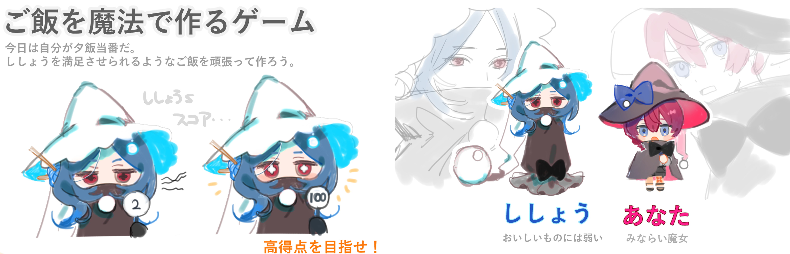
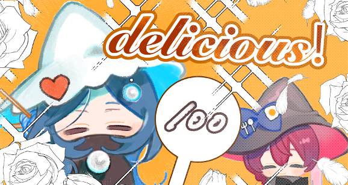

見習い魔法使いの今晩のお夕飯
コップとミストがインタフェースのインタラクティブコンテンツ
東京ゲームショウ2023 出展

ゲーム, インタラクティブコンテンツ, プロジェクションマッピング, 東京ゲームショウ
使用技術
- C++ (OpenGL, OpenGL, Leap Motion, Bluetooth通信, M5Stack(加速度センサ))
- Unity (C#)
概要
プレイヤーは見習い魔法使いとなり、魔法の力を使って師匠のための夕食作りに挑戦します。 画面に表示される目標の色に合わせて、赤・青・緑に輝くミストをコップですくい、鍋へ注ぎます。鍋の中では色を混ぜ合わせることができ、例えば赤と緑を組み合わせることで黄色を作ることができます。プレイヤーは色の混色を考えながら、指定された色を素早く作り出すことを目指します。 ミストは実際に空間へ投影されており、プレイヤーはコップで「すくう」動作を行うことで魔法を使っているような体験を楽しめます。すべての料理を完成させると師匠による審査が行われ、クリアタイムに応じてスコアが決定されます。
 
彼女たちの家の屋根が赤く染まり出した頃、見習いは自分の服の袖を捲りました。
そう、今日のお夕飯担当は見習い魔法使いのあなたです！
「今日こそは、ししょうに美味しかったと言って貰えるような夕飯を作るぞ！」
見習い魔法使いの今日のお夕飯作りが今、始まります！
コップとミストによるインタラクション
コップに取り付けたM5Stackの姿勢センサを用いて、コップの傾きをリアルタイムに取得しています。これにより、プレイヤーの「すくう」「注ぐ」といった動作をゲーム内へ反映しています。 また、カメラ画像からミスト領域の色を取得し、画像処理によって現在のミストの色を判定します。判定結果とコップの状態を組み合わせることで、どの色のミストを取得したかを認識し、ゲーム内の混色システムへ反映しています。 さらに、Leap Motionを用いてプレイヤーの手の位置と動きを追跡し、鍋をかき混ぜる動作を検出しています。プレイヤーが実際に鍋の上で手を回すと、その動きがゲーム内の混色処理に反映され、魔法の料理を作っているような体験を実現しています。 M5Stack、カメラ、Leap Motionを組み合わせることで、「すくう」「注ぐ」「混ぜる」という一連の料理動作を現実空間で再現し、直感的なインタラクションを実現しました。
東京ゲームショウ2023 への出展
作成したコンテンツは2023年9月26日~29日に東京ビッグサイトで開催された東京ゲームショウ2023にて展示を行いました。 東京ゲームショウ2023では、子どもから大人まで幅広い年齢層の来場者が本コンテンツを体験し、楽しんでいただきました。